CICD（Continuous Integration/Continuous Deployment），持续集成持续部署的意思。完成CICD实践需要Kubernetes集群，Harbor，GitLab和Jenkins等软件配合完成，在前面几篇博客中，我已经搭建好了Kubernetes集群，并且在master节点（192.168.33.11,CentOS）上安装好了Harbor、GitLab和Jenkins，有需要可以参考下。
实践准备
CICD流程图
CICD的大致流程如下图所示：
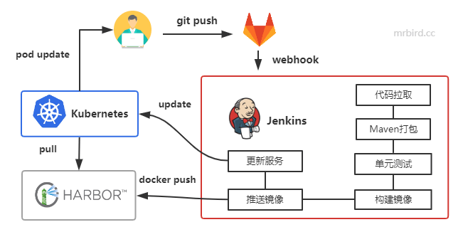
开发者将最新代码提交到GitLab仓库；
GitLab WebHook触发Jenkins构建流水线：
2.1 拉取最新代码；
2.2 Maven打包，打包过程中会先进行单元测试；
2.3 单元测试通过，构建Docker镜像；
2.4 将最新镜像推送到Harbor；
2.5 更新Kubernetes相关配置镜像版本。
Kubernetes感知到镜像更新，从Harbor拉取最新镜像，滚动升级；
开发者看到最新的代码效果。
项目准备
这里我们在Windows上使用IDEA、Spring Boot构建一个简单的Java Web项目，项目名为demo，项目pom如下所示：
1 |
|
在Boot入口类中添加一个简单的Controller方法：
1 |
|
上面方法提供了一个/hello接口，简单返回hello world信息。
接着编写一个简单的单元测试：
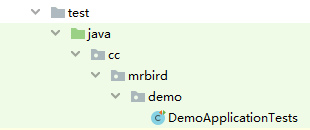
代码如下：
1 | (SpringRunner.class) |
最后在项目的根目录下新建一个Dockerfile：
1 | FROM openjdk:8u212-jre |
至此简单的Java Web项目就准备好了。
GitLab准备
注册一个新的GitLab账号，比如mrbird，然后在GitLab新建一个项目，名称为Demo：
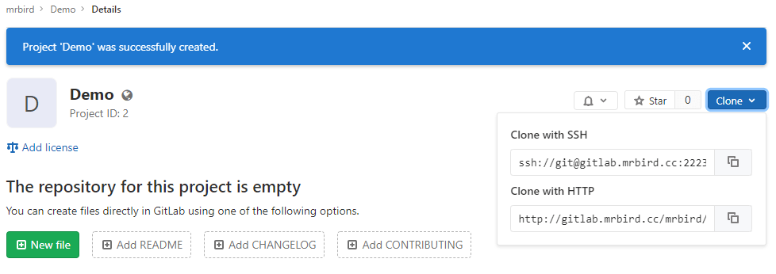
因为我们后续需要在Windows下将项目提交到GitLab，并在192.168.33.11上拉取该项目，所以我们需要在Windows和192.168.33.11服务器上生成SSH Key，并添加到GitLab中。
在Windows及192.168.33.11虚拟机通过下面的命令生成SSH Key：
1 | ssh-keygen -t rsa -C "852252810@qq.com" |
将SSH Key添加到GitLab：
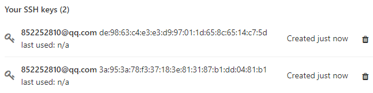
这样我们后续的push和pull操作就不需要输入用户名了。
接着我们将上面创建的Demo项目推送到GitLab中（在IDEA的Terminal窗口中操作，个人习惯用命令行）：
1 | # 配置Git |
推送成功后，回到GitLab页面可以看到项目已经推送OK了：
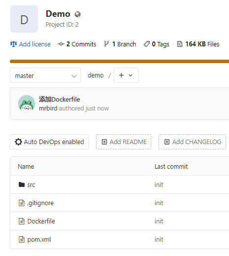
Kubernetes部署SpringBoot项目
在192.168.33.11服务器上将刚刚的项目从GitLab中克隆下来:
1 | git clone ssh://git@gitlab.mrbird.cc:2223/mrbird/demo.git |
因为打包需要Maven环境，所以接着配置Maven：
1 | # 下载Maven安装包 |
添加如下内容：
1 | M2_HOME=/home/vagrant/apache-maven-3.6.2 |
让修改生效：
1 | source /etc/profile |
验证下是否安装成功：
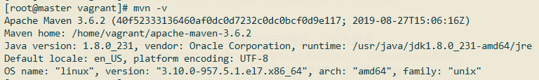
环境准备好后，将目录切换到刚刚git clone的demo目录下，执行mvn clean package命令，完成后可以看到fat jar：

接着执行docker build -t docker.mrbird.cc/febs/demo .命令构建docker镜像：
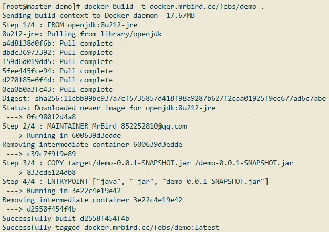
构建成功后执行docker push docker.mrbird.cc/febs/demo命令推送到Harbor：
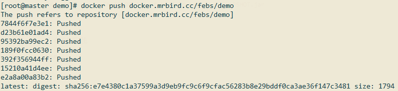
访问Harbor管理页面，可以看到镜像已经推送上来了：

接着编写个简单的Kubernetes配置文件（demo.yml）：
1 | apiVersion: v1 |
运行该配置:
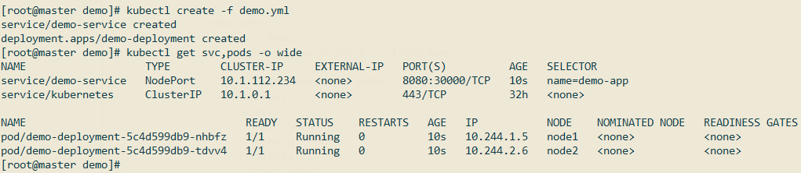
使用浏览器访问http://192.168.33.11:30000/hello:
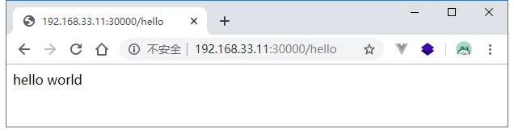
至此Spring Boot项目已经成功运行在Kubernetes集群中了，接下来开始演示如何进行CICD。
CICD实践
就如上面CICD流程图所示，第一步将本地开发代码push到GitLab已经实现了，接下来开始配置GitLab WebHook。
GitLab WebHook
在Jenkins中创建流水线前，先修改两处Jenkins配置。点击Jenkins管理页面的系统管理菜单 -> 全局安全配置：
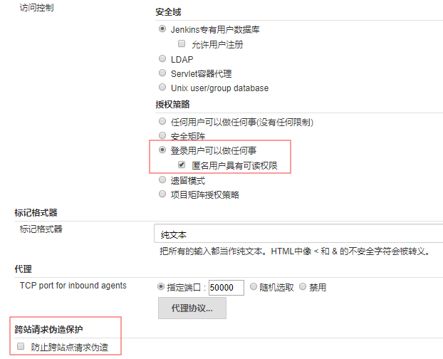
关闭CSRF保护和开启匿名用户具有可读权限。
然后点击新建任务菜单，新增一个名称为demo的流水线，勾选触发远程构建：
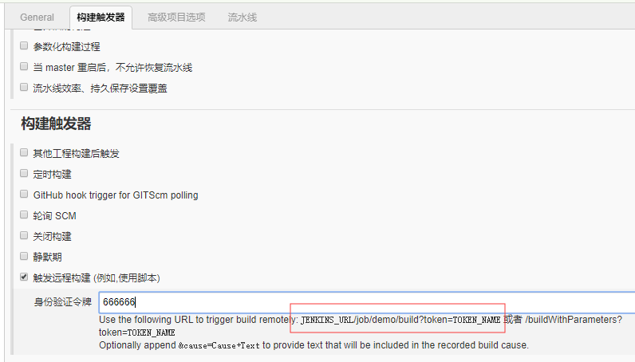
令牌设置为666666，触发地址为JENKINS_URL/job/demo/build?token=TOKEN_NAME，我们需要将这个地址配置为GitLab的WebHook中。
打开GitLab的Demo项目页面，点击左侧的设置菜单：
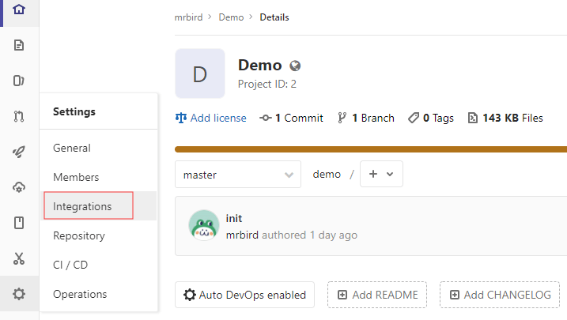
选择integrations：
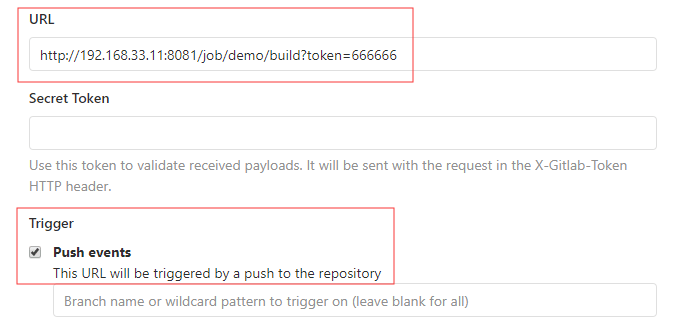
其中http://192.168.33.11:8081为我的Jenkins地址，对应JENKINS_URL；666666是我们设置的令牌，对应TOKEN_NAME。触发事件选择push event就行。
保存WebHook的时候如果提示Url is blocked: Requests to the local network are not allowed的话，可以使用admin@example.com账号登录GitLab（密码就是你第一次登录修改的密码），然后点击Admin Area->Settings->Network：
勾选Allow requests to the local network from web hooks and services即可。保存后，重新使用mrbird账号登录重新配置WebHook即可。
配置好后，测试一下：
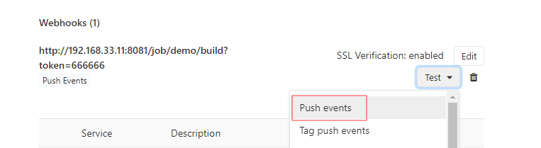
页面弹出如下提示说明配置🆗：
代码拉取
Maven打包前需要先用git命令将代码拉取下来。编辑刚刚创建的流水线，在Pipeline script中添加如下代码：
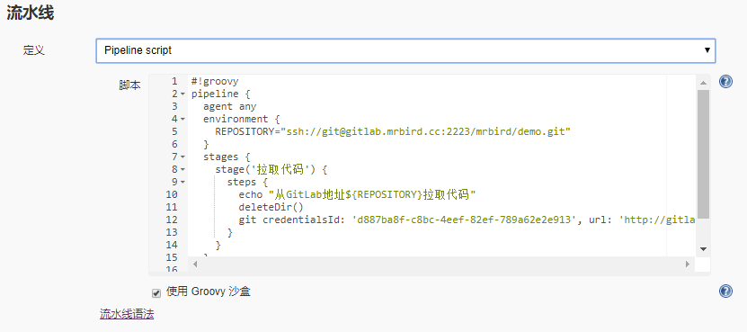
1 | #!groovy |
Pipeline script的基本模板为：
1 | #!groovy |
回到上面的Pipeline script代码，我们主要做了下面几件事：
在environment中定义GitLab项目仓库地址变量，方便下面直接引用；
通过
echo命令输出，方便后续从日志中观察跟踪；通过
deleteDir()清空工作区；通过
git "${REPOSITORY}"从指定Git仓库拉取代码。
其中，使用environment中的变量时候，一定要用"${xx}"的方式引用；第3第4步的命令可以通过流水线语法来生成，比如生成清空当前目录的命令：
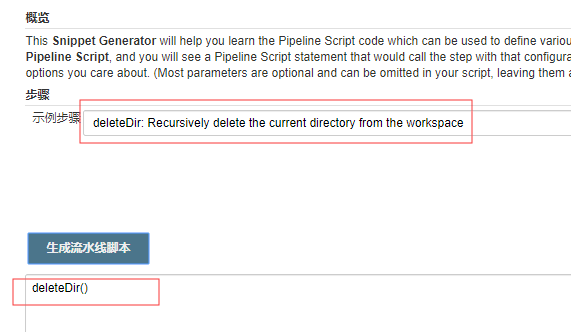
生成通过Git拉取代码的命令：
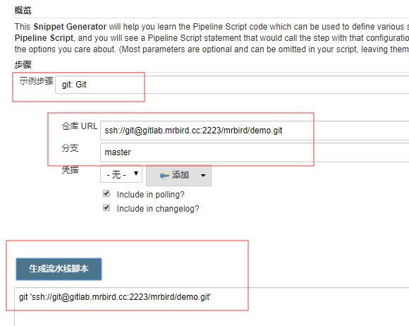
修改好流水线后，点击立即构建，看看我们的配置是否🆗：

从日志来看，代码拉取是成功的。
Maven打包和单元测试
Jenkins 通过shell脚本调用mvn 命令的时候，是从/usr/bin 文件夹中找命令的，这个时候需要做个软链接：
1 | ln -s /home/vagrant/apache-maven-3.6.2/bin/mvn /usr/bin/mvn |
更新流水线的Pipeline script，添加maven打包阶段命令：
1 | #!groovy |
maven打包前会自动运行我们在项目里写好的单元测试，修改后，点击立即构建，查看日志（截取关键部分）：
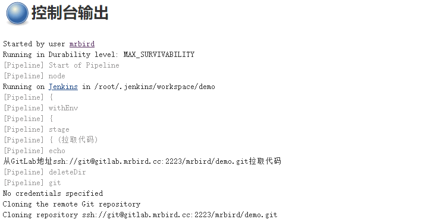
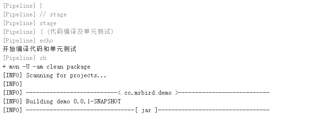
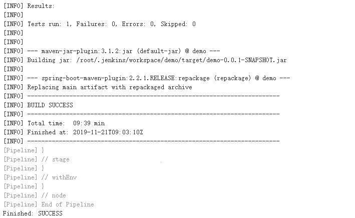
可以看到单元测试及打包成功。
构建镜像及推送
镜像构建和推送涉及命令较多，所以可以定义一个脚本：
1 | vim build_push.sh |
脚本内容如下所示：
1 | #!/bin/bash |
上面脚本定义了三个变量：
MODULE，模块名称，由脚本执行的时候传入；
TIME，时间字符串；
GIT_REVISION，git 提交历史哈希码的前7位；
IMAGE_NAME，镜像名称。
脚本做的事情很简单，根据当前目录的Dockerfile构建Docker镜像，然后将镜像推送到Harbor仓库，推送后，将镜像名称写到当前目录下的image_name文件中（供后续使用）。
给脚本添加可执行权限：
1 | chmod +x build_push.sh |
修改Pipeline script，新增构建镜像及推送阶段命令：
1 | #!groovy |
其中SCRIPT_PATH是上面定义的脚本的路径。
修改好Pipeline script，重新点击立即构建，截取和这部分相关的日志：
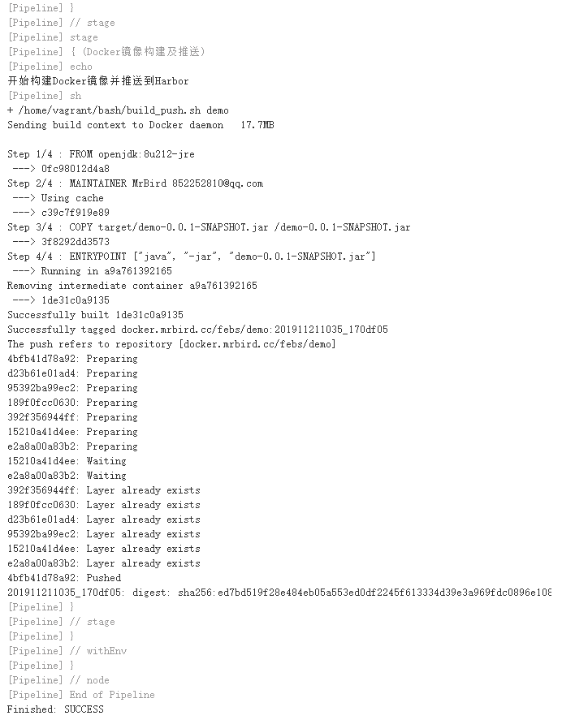
查看镜像列表：
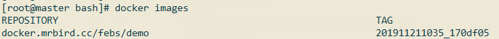
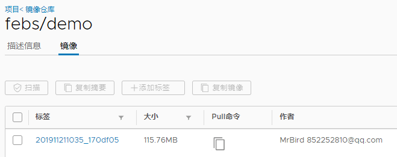
Kubernetes Deployment升级
在/home/vagrant/bash目录下新建deploy.sh脚本：
1 | #!/bin/bash |
脚本内容很简单，就是通过kubectl命令升级相关Pod的镜像，镜像名称从image_name文件中读取。
修改Pipeline script，添加Kubernetes Deployment升级阶段命令：
1 | #!groovy |
修改后，点击立即构建：
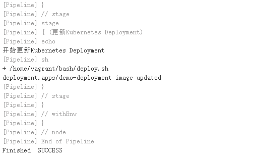
至此我们整条CICD流程就已经都通了，下面测试下CICD。
效果测试
如上面所示，我们访问http://192.168.33.11:30000/hello，页面返回hello world，我们在IDEA中修改Controller方法：
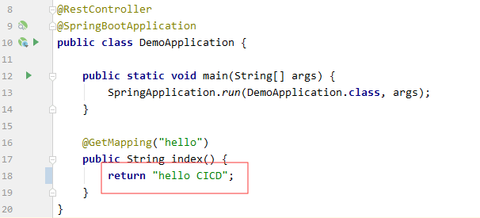
同时修改单元测试方法：
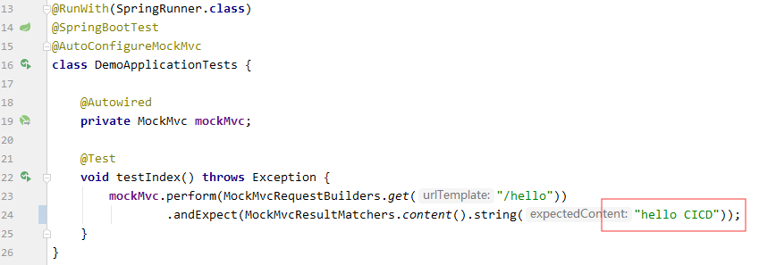
修改后在IDEA的命令窗口输入：
1 | git commit -am update |
将最新的代码提交到GitLab后，过一小会刷新http://192.168.33.11:30000/hello，可以看到，我们修改的内容已经生效了：